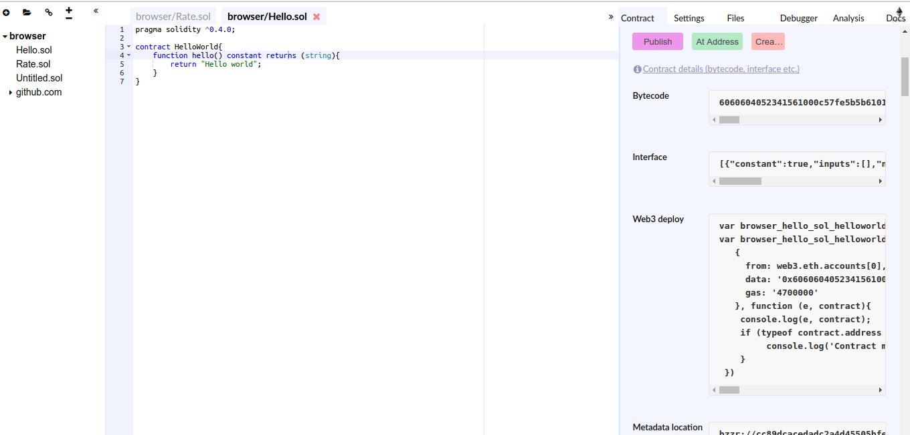

Разработка децентрализованных приложений на платформе Ethereum: быстрый старт | Часть 1
— Учиться и время от времени повторять изученное, разве это не приятно? Встретить друга, прибывшего издалека, разве это не радостно? Человек остается в неизвестности и не испытывает обиды, разве это не благородный муж?
Дисклеймер
Я никак коммерчески не заинтересован в успехе данной платформы, не являюсь одним из ее разработчиков, ничего не продаю; на фоне хайпа вокруг криптовалют напоминаю, что только ты несешь ответственность за любые действия, совершенные с личными финансами.
Некоторые экономисты сравнивают криптовалюты с летящимими самолетами, непригодными для ремонта в воздухе.
Это руководство близко к практике: код, примеры.
Я не буду погружаться и доказывать работоспособность криптографических алгоритмов, которые лежат в основе блокчейна и Ethereum в этой записи.
Введение
Криптовалюты всегда привлекали меня; долго откладывал эту тему. Около 4 месяцев назад наткнулся на информацию о платформе Etherium, возможности которой привели меня в восторг: умные контракты.
Погружение началось с официальной документации, которая была (и сейчас находится) в ужасном состоянии, платформа развивается настолько быстро, что дока не успевает за ней: то и дело в примерах встречаются удаленные методы, а самое главное: нет объяснения о том как работает эта сложная штука с нуля.
Кульминацией моего погружения в эту тему стало выступление на курском митапе разработчиков в апреле этого года.
Основные термины
Что такое умные контракты? Компьютерные протоколы, позволяющие заключать, подтверждать, проверять достоверность контрактов.
Что такое Etherium? С одной стороны это топливо для распределенной вычислительной платформы для заключения умных контрактов, с другой стороны это криптовалюта, его можно хранить, передавать и майнить. Майнингом эфириума обеспечивается работоспособность платформы.
Есть ли ограничние по максимальному количеству Ефириума в сети? Нет прямого ограничения, сеть регулирует свою сложность и вероятность майнинга со временем, количеством участников.
Ключевые концепции эфириума:
- Аккаунт (Кошелек). Пользователь может иметь несколько кошельков, как и в концепции биткоина они защищены приватными и публичными ключами. После создания кошелька он занимает свое место в блокчейне и у него появляется адрес. Замечу, что аккануты в Eth могу быть не только у пользователей, но и у умных контрактов. Контракты (упрощенно) можно рассматривать как ботов для крупных платформ, как и у пользователей у них есть свой юзернейм (адрес аккаунта), по которому с ними можно общаться.
- Блок - (как и в Биткоине) ‘контейнер для транзакций’, сгруппированных по одному признаку (обычно timestamp)
- Транзакция - конечная операция передачи данных в сети. Собираются в блоки
- Газ (Gas) - ‘пошлина’ на транзакции, плата за нагрузку на сеть, есть и в биткоине: чтобы послать определенное количество битков, нужно доплатить немного ‘сверху’
Как Эфириум позволяет создавать и управлять “умными контрактами”? Умные контракты - суть код, они исполняются в EVM (Etherium Virtual Machine) - программируемом блокчейне. Если в биткоине у пользователей есть заранее определенные транзакции, которые можно производить, здесь их можно определять самому.
EVM - полная по Тьюрингу, писать контракты можно на языках Solidity (почти Javascript), Serpent (почти Python), lll (почти Lisp). Код на этих языках компилируется, код контракта вставляется в блокчейн, у него появляется свой адрес.
Работа с клиентом
Как начать пользоваться Etherium? Для Etherium есть несколько клиентов, официальный и самый популярный - Geth, написан на Go. Инструкции по установке доступны здесь.
Чтобы запустить его, после установки, в консоли пиши: geth.
Он присоединится к доступным пирам в сети и начнет скачивать историю транзакций, которая сейчас занимает около 16GB, в директорию ~/./geth/chaindata. Начать взаимодействовать с ним станет можно после синхронизации.
Но geth так же позволяет создать собственную сеть, вместо присоеднинения к глобальной, что полезно для разработки и знакомства с методами. Для этого нужно создать файл genesis.json, в котором будут прописаны настройки сети. Вот пример, который я нашел в одном блоге:1
2
3
4
5
6
7
8
9
10
11
12
13
14
15
16
17{
"nonce": "0x00000000000000043",
"timestamp": "0x00",
"parentHash":"0x0000000000000000000000000000000000000000000000000000000000000000",
"extraData": "0x00",
"gasLimit": "0x800000",
"difficulty": "0x4000",
"mixhash": "0x0000000000000000000000000000000000000000000000000000000000000000",
"coinbase": "0x3333333333333333333333333333333333333333",
"alloc": {},
"config": {
"chainId": 123456789,
"homesteadBlock": 0,
"eip155Block": 0,
"eip158Block": 0
}
}
Краткое объяснение:
difficulty- сложность сетиnonce- еще одна характеристика, определяющая сложность сети, существует в биткоине. Не буду останавливаться на этом, почитать больше можно здесьcoinbase- адрес аккаунта, куда по-умолчанию будут перечислены вымайненые ЭфирыgasLimit- максимальная стоимость Газа на блок
Перед тем, как запускать инициализацию genesis’a создай рабочую директорию для него - eth-dev: cd ~; mkdir eth-dev.
После создания файла в консоли пиши: geth --datadir eth-dev init genesis.json. Инициализация завершена.
Можно запускать: geth --networkid 666 --datadir eth-dev --port 3000 --rpcport 8000 --nodiscover --nat "any" console
Обзор флагов:
networkid- id сети, по-умолчанию id главной сети - 1, но т.к. используется кастомный genesis он не позволит к ней присоединиться, можно писать что угодно.datadir- директория в которой будет инициализированы данные gethport- порт, для соединения с сетьюrpcport- да, geth поддерживает RPCnodiscover- отключаетdiscover- поиск пиров для синхронизации, прописывать мы их будем вручную.console- открыть консоль
Для geth важен порядок аргументов. console пиши последним.
Обзор консоли geth
После запуска будет выведено что-то в этом духе:1
2
3
4
5instance: Geth/v1.6.6-stable-10a45cb5/linux-amd64/go1.8.1
coinbase: 0x6397801bfee0a65402ba3b461c03f757ef1c07d2
at block: 38 (Wed, 03 May 2017 09:54:56 MSK)
datadir: /home/altjsus/ETH/eth-dev
modules: admin:1.0 debug:1.0 eth:1.0 miner:1.0 net:1.0 personal:1.0 rpc:1.0 txpool:1.0 web3:1.0
У консоли есть модули modules.
Краткий обзор:
admin- модуль для администрирования, запускает/останавливает RPC, WS-RPC, добавлять/удалять пиры, импортировать/экспортировать чейн.eth- важный функционал, связанный с платформой. Подписать, получить все аккаунты, транзакции, код контракта, подписать тразакцию, подсчитать стоимость газа и тд.personal- управление своими аккаунтамиnet- информация о сетиtxpool- пул транзакций. Транзакции, которые еще не ‘вымайнились’, не получили места в блокчейнеweb3- Web3 - это javascript API к Ethereum’у. Включает все перечисленные модули.
Для начала создай новый аккаунт:1
var ac = personal.createAccount();
Потребуется ввести passphrase; можно оставить пустым.
Установи аккаунт по-умолчанию:1
eth.defaultAccount = ac;
Начало разработки
Приступая к написанию кода: можно писать в вашем любимом текстовом редакторе/IDE либо в официальной среде Remix прямо в браузере. Я буду использовать последний вариант, писать на Solidity.
Контракт: Hello world
Простейший пример: “Hello World”. Название файла: Hello.sol1
2
3
4
5
6pragma solidity ^0.4.0;
contract HelloWorld{
function hello() constant returns (string){
return "Hello world";
}
}
Первой строчкой указывается версия solidity.constant здесь означает, что функция никак не изменяет, ничего не пишет в блокчейн. returns - что она возвращает string.
У контрактов нет никакой ‘точки входа’, как main во многих языках.
Скомпилить его в EVM байт-код можно прямо в браузере. Взаимодействие с контрактом в Remix сильно ограничено
Работа с контрактами в geth
На этом этапе могут возникнуть проблемы: я говорил Eth развивается слишком быстро, что негативно влияет на стабильность.
Как деплоить контракт в Eth:
- через компилятор Solidity (языка по выбору), для этого его нужно установить:
npm install -g solc - через web3 (чистый js)
Советую деплоить через Web3.

Внизу справа строчка ‘Contract details’, интересует вкладка ‘Web3 deploy’. Ниже будут машинные инструкции для EVM, если интересно - взгляни на них.
Сначала разблокируй свой аккаунт, по-умолчанию он находится в блокированном состоянии: безопасность.personal.unlockAccount(eth.defaultAccount);
Пора майнить! Для того, чтобы оплатить нагрузку на сеть придется поработать. В тестовой сети с чистым genesis-файлом майнинг происходит быстро: miner.start().
Подожди 15-20 секунд, пиши miner.stop(). Процесс не останавливается SIGINT Ctrl+C.
Проверяй баланс: eth.getBalance(ac).
После чего обрати внимание на названия переменных в окне ‘Web3 deploy’ в браузере:
1 | var browser_hello_sol_helloworldContract = web3.eth.contract([{"constant":true,"inputs":[],"name":"hello","outputs":[{"name":"","type":"string"}],"payable":false,"type":"function"}]); |
Объяснение: контракт (browser...Contract) - это как класс в объектно-ориентированном программировании, у которого могут быть свои объекты (инстансы) - то, где он (его байткод) вставляется в блокчейн, что происходит при вызове .new() или .at()
В Эфириуме web3.eth.contract() по сути - ABI (Aplication Binary Interface) контракта.
Деплой контракта в geth
Перехожу к деплою: копипасть вывод из ‘web3 deploy’ в консоль geth.
Сделано? Отлично, если ввести в browser_hello_sol_helloworld, вывод будет примерно такой:1
2
3
4
5
6
7
8
9
10
11
12
13> browser_hello_sol_helloworld
{
abi: [{
constant: true,
inputs: [],
name: "hello",
outputs: [{...}],
payable: false,
type: "function"
}],
address: undefined,
transactionHash: "0xc2157d2d41a48571e616225c1d9b7270fe1b01f8fa2e9f217188205cfe098413"
}
address: undefined - значит контракт еще не занял свое место в блокчейне, для этого его нужно ‘вымайнить’, сейчас он ‘висит’ в пуле транзакций. txpool выглядит так:1
2
3
4
5
6
7
8
9
10
11
12
13
14
15
16
17
18
19
20
21
22
23
24> txpool
{
content: {
pending: {
0x6397801bfee0a65402ba3b461c03f757ef1c07d2: {
0: {...}
}
},
queued: {}
},
inspect: {
pending: {
0x6397801bfee0a65402ba3b461c03f757ef1c07d2: {
0: "contract creation: 0 wei + 4700000 × 20000000000 gas"
}
},
queued: {}
},
status: {
pending: 1,
queued: 0
},
....
}
Запускай miner.start(), жди 10-15 секунд, miner.stop().1
2
3
4
5
6
7
8
9
10
11
12
13
14
15> browser_hello_sol_helloworld
{
abi: [{
constant: true,
inputs: [],
name: "hello",
outputs: [{...}],
payable: false,
type: "function"
}],
address: "0x1d09394b74ac214f4059852f1f97c13e6d77547f",
transactionHash: "0xc2157d2d41a48571e616225c1d9b7270fe1b01f8fa2e9f217188205cfe098413",
allEvents: function(),
hello: function()
}
У контракта появился адрес! Теперь с ним могу взаимодействовать я и другие участники сети.1
2> browser_hello_sol_helloworld.hello()
"Hello world"
Заметь, что при получении информации о транзакции которая вставила этот контракт в блокчейн (transactionHash):1
2
3
4
5
6
7
8
9
10
11
12
13
14
15
16
17> eth.getTransaction("0x1d..")
{
blockHash: "0x90e8d81075a9766b19721e7809a99a7391c4629b92f78aa3861f265db2749a30",
blockNumber: 113,
from: "0xbd0212a4e65c46bd7536cc8ba38a83bafb2801ef",
gas: 4700000,
gasPrice: 20000000000,
hash: "0x95ab45297531235b66fce05c07bef084a0b70d88bb21021af657d9d1b23dfca5",
input: "0x6060604052341561000c57fe5b5b6101598061001c6000396000f30060606040526000357c0100000000000000000000000000000000000000000000000000000000900463ffffffff16806319ff1d211461003b575bfe5b341561004357fe5b61004b6100d4565b604051808060200182810382528381815181526020019150805190602001908083836000831461009a575b80518252602083111561009a57602082019150602081019050602083039250610076565b505050905090810190601f1680156100c65780820380516001836020036101000a031916815260200191505b509250505060405180910390f35b6100dc610119565b604060405190810160405280600b81526020017f48656c6c6f20776f726c6400000000000000000000000000000000000000000081525090505b90565b6020604051908101604052806000815250905600a165627a7a72305820b6a58b0bb0bdf6847d5a2ed6c0aff4abd39a7bc785559960cbc467c4492f97f80029",
nonce: 2,
r: "0xf7b81828f929f800b3526a83a21796a9ef201a46c0c1f7af38dd65fd5689a108",
s: "0x6a59f087677020132063632fd41471e54d6911cd261029d7c2292984036c1952",
to: null,
transactionIndex: 0,
v: "0x75bcd186",
value: 0
}
В поле from: будет твой аккаунт, а в поле input - байт-код контракта.
Создам другой процесс geth в другом терминале, чтобы симулировать второго пользователя.1
2
3cd ~; mkdir eth-dev2;
geth --datadir eth-dev2 init genesis.json;
geth --networkid 666 --datadir eth-dev2 --port 3001 --rpcport 8001 --nodiscover --nat "any" console;
Создание аккаунта уже описывал.
Как соединить два клиента geth с одинаковым genesis’ом?
В первом клиенте нужно получить id узла:1
2> admin.nodeInfo.enode
"enode://b5759e8c5169cf5a7ceacc9f1677db74ffc1de4d83c3de46f72ba50167908b35e3521bf7b6be72c977a5cc1dab9c46961c75198e914d90fb1ecf46610d00aa6f@[::]:3000?discport=0"
Копируй его в другом клиенте пиши:1
admin.addPeer("enode://b5759e8c5169cf5a7ceacc9f1677db74ffc1de4d83c3de46f72ba50167908b35e3521bf7b6be72c977a5cc1dab9c46961c75198e914d90fb1ecf46610d00aa6f@[::]:3000?discport=0")
Т. к. в предидущем клиенте происходил майнинг, второму клиенту потребуется немного времени (10-15 секунд), чтобы синхронизировать блокчейн.
Проверка: в обоих клиентах пиши1
> net
Вывод должен быть:1
2
3
4
5
6{
listening: true,
peerCount: 1,
version: "666",
...
}
Готово!
Как вызвать контракт из второго клиента? Вызвать код контракта не получится без ABI. Копируй его из первого клиента, форматируй его в одну строку (можно здесь)
1 | > var hello = eth.contract([{constant:true,inputs:[],name:"hello",outputs:[{name:"",type:"string"}],payable:false,type:"function"}]).at("0x1d...") |
Следующий контракт: примитивный чат
Простейший чат на Solidity.
1 | pragma solidity ^0.4.0; |
Перед деплоем необходимо установить coinbase т.е. аккаунт, который будет взаимодействовать с контрактом: с него спишут Газ, переведут средства, если контракт предусматривает что-либо подобное в себе.1
> eth.defaultAccount=eth.coinbase
Далее: разблокировка аккаунта, деплой через Web3, майнинг.
Взаимойдествие с контрактом.1
> browser_chat_sol_chat.send_msg("Hello!")`
Скопируй хэш транзакции, сейчас будем инспектировать. Запускай/останавливай майнер на 10-15 секунд.1
2
3
4> var hello_transaction = eth.getTransaction("0x...")
> console.log(hello_transaction)
> console.log(web3.toAscii(hello_transaction.input))
"Hello!"
Славно.
Продолжение следует
Новые, более сложные контракты добавлю во второй части поста, выход которой вы можете ускорить пожертвованиями на мой аккаунт PayPal или на кошелек Эфириума: 0x77ac73a0ce7a70ea42fd568b3b59165ea47d2b76
Пишите о личных экспериментах с Эфиром, задавайте вопросы.
Кошелек Mist
Для тех, кто не любит командную строку, а предпочитает красивые GUI: официальный кошелек Mist.
Тестирование
При разработке нагруженных контрактов важна надежность, нужно писать тесты.
Для тестирования контрактов есть несколько фреймворков. Самые популярные: Truffle, Embark.
Что дальше
Вопрос, который задают большинство людей мне, после рассказа про Eth: что дальше, как его использовать.
Отвечаю: как хотите. В ваших руках невероятная мощь распределённой базы данных, защищенной от подделок, javascript API к ней и возможность вызова процедур по RPC. КАК УГОДНО, КАРЛ!
В поиске вдохновения поможет проект State of Dapps.
На Эфириуме пилят много проектов, связанных с азартными играми (контракты как казино, обалдеть), вот пример.
Хочу отметить проекты: Lynur - децентрализованная википедия с системой наград, Decentraland - попытка связать блокчейн и виртуальную реальность (не знаю что это, но выглядит прикольно), http://www.bspend.com/etherization - RPG игруля, в Эфире.
Где купить Ethereum?
В России купить Эфир за рубли по карте можно на сервисах: 24paybank, Alfacashier.
Заканчивается быстро, проценты невероятные, анонимности никакой, плюс обязательно отправить фото кредитной карты.